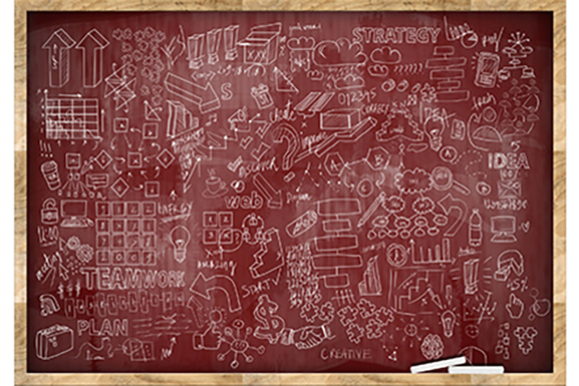

© Getty ImagesWell done on reaching the end of week 2.
You have now completed weeks 1 and 2, which is the first step towards developing skills of modern data analysts. You have learned how to use examples of aggregation functions to summarise data. You have also learned how to visualise data using various plots, such as scatter plots and histograms. More importantly, you have made the first steps towards developing your skills in R programming. You have learned how to work with data and follow protocols for ethical use of data. We hope you are also making progress towards developing skills to explain and communicate properties of data to different users.
Ensure that you have learned these concepts as weeks 3 and 4 will escalate in complexity and having a solid foundation in the basics will be a great advantage.
With weeks 1 and 2 complete, you have been introduced to content that will prepare you for the first assignment. You have also been introduced to the basics for programming in R and data visualisation which all contribute to the following unit learning outcomes:
We hope the information and practical tasks in the past two weeks have provided you with opportunities to expand your thinking in this topic and prepare you for weeks 3 and 4.